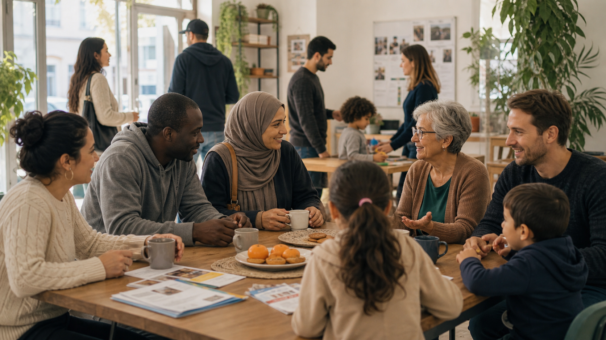

Asociación para el Desarrollo e Integración Diez 42
Social action, clearly explained.
Diez42 is registered in Málaga as a social-action association with provincial scope, serving immigrants, refugees, and other newcomers through assistance, education, information, culture, training, and the promotion of the common good.
v71.5

About
Trust first, emotion second.
This concept is the most restrained option. It works well if the audience includes partner organizations, churches, institutions, volunteers, and supporters who need clarity before warmth.
Formal name
Asociación para el Desarrollo e Integración Diez 42.
Registry notes
Registered 27 April 2021, CIF G93613776, Málaga provincial scope.
Public presence
Social channels appear under diez42malaga / Diez42Malaga.
What this site can say now
- Formal association name and CIF
- Málaga district and provincial scope
- Social-action purpose and public aims
- How newcomers, volunteers, and partners can contact the team
What can wait for V2
- Donation flow
- Receipts and tax language
- Public reporting
- Formal partner intake forms
Contact
Clear next step. No clutter.
Replace this with confirmed email, phone, WhatsApp, social links, and registry details before launch.